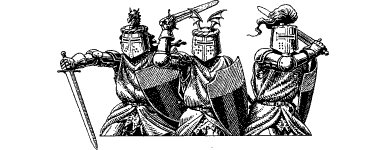

140
Within the hour the final preparations for your airborne voyage to Lencia are completed, and Lord Floras and you are piped aboard the Skyrider by Bo’sun Nolrim and his cheerful crew of dwarves. You exchange a few reminiscences with each of the jovial crewmen and cannot help but smile when they tell you how proud they feel to have been given the chance to serve you once more.
Nolrim takes the helm and you sense a vibration run down the length of the deck as he coaxes the craft’s powerful engine to life. Lord Floras joins you at the prow and together you wave a farewell to Rimoah and your fellow Kai as, steadily, the Skyrider ascends into the crisp, wintry sky. Then, with a sudden surge of power, the keel clears the battlements of the Tower of the Sun and swiftly the monastery and its inhabitants recede into the distance.
You and your companion are escorted to a warm cabin at the bow which has been prepared especially for your passage. It is well stocked with provisions and, spread out across a grand oak table, you find several maps of Northern Magnamund. Aided by Lord Floras, you study these maps and use them to chart your course to the Lencian city-port of Vadera. Bo’sun Nolrim is informed of your chosen route and, as he sets about implementing your course, you settle back to enjoy what will be a long voyage. By your calculations, it will take thirty hours for the Skyrider to reach its destination.
During your voyage, Lord Floras recounts the dramatic events which have taken place in the Western Tentarias since the demise of the Darklords. Prior to their fall, the Drakkarim nations had for many centuries kept the Lencians at bay. Countless crusades had been undertaken to recapture their former lands but all had ended in costly defeat for the House of Sarnac. Then, two years ago, the tide finally turned when the King launched an invasion across the Gulf of Lencia into the lands of Zaldir and Nyras. The boldness of his strategy and the unpreparedness of his enemies combined to win for him many victories in the early months of the war. Much of Zaldir and all of southern Nyras were taken and held by his conquering knights, and now the lines of battle are drawn diagonally across the centre of Nyras, from Lake Lenag in the north to the marshland fortress of Lozonzee in the east. However, King Sarnac cannot lay claim to total victory in the south, for the cities of Shpyder and Darke have defied all his attempts at capture. Their Drakkarim garrisons have steadfastly held on to these important strongholds and, although they have been surrounded and besieged for more than a year, still they refuse to surrender.
{kind=link}

‘At present, the war is focused around the towns of Hokidat and Konozod,’ says Lord Floras, tracing a circle around their location on the map with the tip of his index finger. ‘Many battles have been fought here but victory has, as yet, eluded us. Now, with the onset of a cruel winter, our advance has ground to a halt. Maintaining the sieges at Shpyder and Darke has drained us of troops and resources that would have been put to better use in the north. To compensate for this shortage, the King has employed many companies of foreign mercenaries to reinforce his armies in the field, but their services are expensive and the campaign has already proved costly, both in revenue and lives. The King is hard-pressed to pay for their continued loyalty and already several regiments have deserted. If Magnaarn were to complete his quest and strike now, whilst our battle lines are weakened, his counterattack could push us all the way back to the sea.’
Lord Floras’ report is sobering, yet it serves to strengthen your determination to thwart Magnaarn’s quest. Later, shortly before nightfall, you leave the cabin and go up to the stern deck for a breath of fresh air. In quiet solitude you see the great expanse of the Slovarian Plain passing by more than a mile beneath the craft and, as you watch, you lose yourself in thoughts of what may await your arrival in Lencia. The night sky is clear and laced with twinkling stars. As you return to the cabin to sleep, you draw comfort from the thought that the weather and the stars have seen fit to help speed your night passage to Vadera.